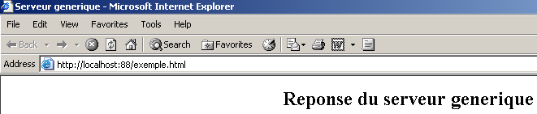

9. Código fuente de los programas
9.1. El cliente genérico TCP
Muchos de los servicios creados en los inicios de Internet funcionan según el modelo del servidor de eco estudiado anteriormente: los intercambios cliente-servidor se realizan mediante el intercambio de líneas de texto. Vamos a escribir un cliente tcp genérico que se iniciará de la siguiente manera: java cltTCPgenerique servidor puerto
Este cliente TCP se conectará al puerto port del servidor serveur. Una vez hecho esto, creará dos subprocesos:
- un subproceso encargado de leer los comandos introducidos con el teclado y enviarlos al servidor
- un subproceso encargado de leer las respuestas del servidor y mostrarlas en pantalla
¿Por qué dos subprocesos? Cada servicio TCP-IP tiene su propio protocolo y a veces se dan las siguientes situaciones:
- el cliente debe enviar varias líneas de texto antes de recibir una respuesta
- la respuesta de un servidor puede contener varias líneas de texto
Por lo tanto, el bucle de envío de una sola línea al servidor y recepción de una sola línea enviada por el servidor no siempre es adecuado. Por lo tanto, crearemos dos bucles independientes:
- un bucle para leer los comandos tecleados en el teclado que se enviarán al servidor. El usuario indicará el final de los comandos con la palabra clave fin.
- un bucle de recepción y visualización de las respuestas del servidor. Se trata de un bucle infinito que solo se interrumpirá cuando el servidor cierre la conexión de red o cuando el usuario introduzca el comando fin desde el teclado.
Para tener estos dos bucles separados, necesitamos dos subprocesos independientes. Veamos un ejemplo de ejecución en el que nuestro cliente genérico tcp se conecta a un servicio SMTP (Protocolo de Transferencia SendMail). Este servicio se encarga de enviar el correo electrónico a sus destinatarios. Funciona en el puerto 25 y utiliza un protocolo de comunicación de tipo intercambio de líneas de texto.
Dos>java clientTCPgenerique istia.univ-angers.fr 25
Commandes :
<-- 220 istia.univ-angers.fr ESMTP Sendmail 8.11.6/8.9.3; Mon, 13 May 2002 08:37:26 +0200
help
<-- 502 5.3.0 Sendmail 8.11.6 -- HELP not implemented
mail from: machin@univ-angers.fr
<-- 250 2.1.0 machin@univ-angers.fr... Sender ok
rcpt to: serge.tahe@istia.univ-angers.fr
<-- 250 2.1.5 serge.tahe@istia.univ-angers.fr... Recipient ok
data
<-- 354 Enter mail, end with "." on a line by itself
Subject: test
ligne1
ligne2
ligne3
.
<-- 250 2.0.0 g4D6bks25951 Message accepted for delivery
quit
<-- 221 2.0.0 istia.univ-angers.fr closing connection
[fin du thread de lecture des réponses du serveur]
fin
[fin du thread d'envoi des commandes au serveur]
Comentemos estos intercambios entre cliente y servidor:
- el servicio SMTP envía un mensaje de bienvenida cuando un cliente se conecta a él:
- Algunos servicios tienen un comando help que proporciona indicaciones sobre los comandos que se pueden utilizar con el servicio. Aquí no es el caso. Los comandos SMTP utilizados en el ejemplo son los siguientes:
- mail from: expéditeur, para indicar la dirección de correo electrónico del remitente del mensaje
- rcpt to: destinataire, para indicar la dirección de correo electrónico del destinatario del mensaje. Si hay varios destinatarios, se reenvía tantas veces como sea necesario el comando rcpt to: para cada uno de los destinatarios.
- data, que indica al servidor SMTP que se va a enviar el mensaje. Tal y como se indica en la respuesta del servidor, esta es una secuencia de líneas que termina con una línea que contiene únicamente el carácter punto. Un mensaje puede tener encabezados separados del cuerpo del mensaje por una línea en blanco. En nuestro ejemplo, hemos puesto un asunto con la palabra clave Subject:
- una vez enviado el mensaje, se puede indicar al servidor que se ha terminado con el comando quit. El servidor cierra entonces la conexión de red. El hilo de lectura puede detectar este evento y detenerse.
- A continuación, el usuario pulsa «fin» en el teclado para detener también el hilo de lectura de los comandos introducidos con el teclado.
Si comprobamos el correo recibido, tenemos lo siguiente (Outlook):

Cabe señalar que el servicio SMTP no puede detectar si un remitente es válido o no. Por lo tanto, nunca se puede confiar en el campo from de un mensaje. En este caso, el remitente machin@univ-angers.fr no existía.
Este cliente genérico tcp nos permite descubrir el protocolo de diálogo de los servicios de Internet y, a partir de ahí, crear clases especializadas para los clients de dichos servicios. Descubramos el protocolo de comunicación del servicio POP (Post Office Protocol), que permite recuperar los correos electrónicos almacenados en un servidor. Funciona en el puerto 110.
Dos> java clientTCPgenerique istia.univ-angers.fr 110
Commandes :
<-- +OK Qpopper (version 4.0.3) at istia.univ-angers.fr starting.
help
<-- -ERR Unknown command: "help".
user st
<-- +OK Password required for st.
pass monpassword
<-- +OK st has 157 visible messages (0 hidden) in 11755927 octets.
list
<-- +OK 157 visible messages (11755927 octets)
<-- 1 892847
<-- 2 171661
...
<-- 156 2843
<-- 157 2796
<-- .
retr 157
<-- +OK 2796 octets
<-- Received: from lagaffe.univ-angers.fr (lagaffe.univ-angers.fr [193.49.144.1])
<-- by istia.univ-angers.fr (8.11.6/8.9.3) with ESMTP id g4D6wZs26600;
<-- Mon, 13 May 2002 08:58:35 +0200
<-- Received: from jaume ([193.49.146.242])
<-- by lagaffe.univ-angers.fr (8.11.1/8.11.2/GeO20000215) with SMTP id g4D6wSd37691;
<-- Mon, 13 May 2002 08:58:28 +0200 (CEST)
...
<-- ------------------------------------------------------------------------
<-- NOC-RENATER2 Tl. : 0800 77 47 95
<-- Fax : (+33) 01 40 78 64 00 , Email : noc-r2@cssi.renater.fr
<-- ------------------------------------------------------------------------
<--
<-- .
quit
<-- +OK Pop server at istia.univ-angers.fr signing off.
[fin du thread de lecture des réponses du serveur]
fin
[fin du thread d'envoi des commandes au serveur]
Los comandos principales son los siguientes:
- user login, donde se introduce el nombre de usuario en la máquina que aloja nuestros correos
- pass password, donde se introduce la contraseña asociada al nombre de usuario anterior
- list, para obtener la lista de mensajes en formato de número y tamaño en bytes
- retr i, para leer el mensaje n.º i
- quit, para salir de la sesión.
Veamos ahora el protocolo de comunicación entre un cliente y un servidor web que suele funcionar en el puerto 80:
Dos> java clientTCPgenerique istia.univ-angers.fr 80
Commandes :
GET /index.html HTTP/1.0
<-- HTTP/1.1 200 OK
<-- Date: Mon, 13 May 2002 07:30:58 GMT
<-- Server: Apache/1.3.12 (Unix) (Red Hat/Linux) PHP/3.0.15 mod_perl/1.21
<-- Last-Modified: Wed, 06 Feb 2002 09:00:58 GMT
<-- ETag: "23432-2bf3-3c60f0ca"
<-- Accept-Ranges: bytes
<-- Content-Length: 11251
<-- Connection: close
<-- Content-Type: text/html
<--
<-- <html>
<--
<-- <head>
<-- <meta http-equiv="Content-Type"
<-- content="text/html; charset=iso-8859-1">
<-- <meta name="GENERATOR" content="Microsoft FrontPage Express 2.0">
<-- <title>Bienvenue a l'ISTIA - Universite d'Angers</title>
<-- </head>
....
<-- face="Verdana"> - Dernire mise jour le <b>10 janvier 2002</b></font></p>
<-- </body>
<-- </html>
<--
[fin du thread de lecture des réponses du serveur]
fin
[fin du thread d'envoi des commandes au serveur]
Un cliente web envía sus comandos al servidor según el siguiente esquema:
El servidor web solo responde tras recibir la línea vacía. En el ejemplo solo hemos utilizado un comando:
que solicita al servidor el URL /index.html e indica que trabaja con el protocolo HTTP version 1.0. La versión más reciente de este protocolo es la 1.1. El ejemplo muestra que el servidor respondió enviando el contenido del archivo index.html y, a continuación, cerró la conexión, ya que se observa que el hilo de lectura de respuestas finaliza. Antes de enviar el contenido del archivo index.html, el servidor web envió una serie de encabezados que terminaban en una línea en blanco:
<-- HTTP/1.1 200 OK
<-- Date: Mon, 13 May 2002 07:30:58 GMT
<-- Server: Apache/1.3.12 (Unix) (Red Hat/Linux) PHP/3.0.15 mod_perl/1.21
<-- Last-Modified: Wed, 06 Feb 2002 09:00:58 GMT
<-- ETag: "23432-2bf3-3c60f0ca"
<-- Accept-Ranges: bytes
<-- Content-Length: 11251
<-- Connection: close
<-- Content-Type: text/html
<--
<-- <html>
La línea <html> es la primera línea del archivo /index.html. Lo anterior se denomina encabezados HTTP (Protocolo de transferencia HyperText). No vamos a detallar aquí estas cabeceras, pero recordaremos que nuestro cliente genérico permite acceder a ellas, lo que puede resultar útil para comprenderlas. La primera línea, por ejemplo:
indica que el servidor web contactado entiende el protocolo HTTP/1.1 y que ha encontrado correctamente el archivo solicitado (200 OK), siendo 200 un código de respuesta HTTP. Las líneas
indican al cliente que va a recibir 11 251 bytes que representan texto HTML (HyperText Markup Language) y que, al finalizar el envío, se cerrará la conexión.
Así pues, tenemos aquí un cliente tcp muy práctico. Sin duda hace menos que el programa telnet que hemos utilizado anteriormente, pero ha sido interesante escribirlo nosotros mismos. El programa del cliente tcp genérico es el siguiente:
// paquetages importés
import java.io.*;
import java.net.*;
public class clientTCPgenerique{
// recibe como parámetro las características de un servicio en el formato
// servidor puerto
// se conecta al servicio
// crea un subproceso para leer los comandos introducidos mediante el teclado
// estas se enviarán al servidor
// crea un subproceso para leer las respuestas del servidor
// estas se mostrarán en pantalla
// todo termina con el comando «fin» introducido con el teclado
// variable de instancia
private static Socket client;
public static void main(String[] args){
// sintaxis
final String syntaxe="pg serveur port";
// número de argumentos
if(args.length != 2)
erreur(syntaxe,1);
// se anota el nombre del servidor
String serveur=args[0];
// el puerto debe ser un número entero >0
int port=0;
boolean erreurPort=false;
Exception E=null;
try{
port=Integer.parseInt(args[1]);
}catch(Exception e){
E=e;
erreurPort=true;
}
erreurPort=erreurPort || port <=0;
if(erreurPort)
erreur(syntaxe+"\n"+"Port incorrect ("+E+")",2);
client=null;
// pueden surgir problemas
try{
// se conecta al servicio
client=new Socket(serveur,port);
}catch(Exception ex){
// error
erreur("Impossible de se connecter au service ("+ serveur
+","+port+"), erreur : "+ex.getMessage(),3);
// fin
return;
}//catch
// se crean los subprocesos de lectura/escritura
new ClientSend(client).start();
new ClientReceive(client).start();
// fin del hilo principal
return;
}// main
// visualización de errores
public static void erreur(String msg, int exitCode){
// visualización de error
System.err.println(msg);
// parada con error
System.exit(exitCode);
}//error
}//clase
class ClientSend extends Thread {
// clase encargada de leer los comandos introducidos mediante el teclado
// y enviarlos a un servidor a través de un cliente tcp pasado como parámetro
private Socket client; // el cliente tcp
// constructor
public ClientSend(Socket client){
// se indica el cliente tcp
this.client=client;
}//constructor
// método Run del hilo
public void run(){
// datos locales
PrintWriter OUT=null; // flujo de escritura de red
BufferedReader IN=null; // flujo de teclado
String commande=null; // comando leído en el teclado
// gestión de errores
try{
// creación del flujo de escritura de red
OUT=new PrintWriter(client.getOutputStream(),true);
// creación del flujo de entrada del teclado
IN=new BufferedReader(new InputStreamReader(System.in));
// bucle de introducción y envío de comandos
System.out.println("Commandes : ");
while(true){
// lectura del comando introducido por teclado
commande=IN.readLine().trim();
// ¿Terminado?
if (commande.toLowerCase().equals("fin")) break;
// envío del comando al servidor
OUT.println(commande);
// siguiente comando
}//while
}catch(Exception ex){
// error
System.err.println("Envoi : L'erreur suivante s'est produite : " + ex.getMessage());
}//catch
// fin: se cierran los flujos
try{
OUT.close();client.close();
}catch(Exception ex){}
// se señala el fin del hilo
System.out.println("[Envoi : fin du thread d'envoi des commandes au serveur]");
}//ejecución
}//clase
class ClientReceive extends Thread{
// clase encargada de leer las líneas de texto destinadas a un
// cliente tcp pasado como parámetro
private Socket client; // el cliente tcp
// constructor
public ClientReceive(Socket client){
// se anota el cliente tcp
this.client=client;
}//constructor
// método Run del hilo
public void run(){
// datos locales
BufferedReader IN=null; // flujo de lectura de red
String réponse=null; // respuesta del servidor
// gestión de errores
try{
// creación del flujo de lectura de red
IN=new BufferedReader(new InputStreamReader(client.getInputStream()));
// bucle de lectura de líneas de texto del flujo IN
while(true){
// lectura del flujo de red
réponse=IN.readLine();
// ¿flujo cerrado?
if(réponse==null) break;
// visualización
System.out.println("<-- "+réponse);
}//while
}catch(Exception ex){
// error
System.err.println("Réception : L'erreur suivante s'est produite : " + ex.getMessage());
}//catch
// fin - se cierran los flujos
try{
IN.close();client.close();
}catch(Exception ex){}
// se señala el fin del hilo
System.out.println("[Réception : fin du thread de lecture des réponses du serveur]");
}//ejecución
}//clase
9.2. El servidor genérico Tcp
Ahora nos centramos en un servidor
- que muestra en pantalla los comandos enviados por sus clients
- y les envía como respuesta las líneas de texto tecleadas por un usuario. Por lo tanto, es este último quien actúa como servidor.
El programa se inicia con: java serveurTCPgenerique portEcoute, donde portEcoute es el puerto al que deben conectarse los clients. El servicio al cliente estará a cargo de dos subprocesos:
- un subproceso dedicado exclusivamente a leer las líneas de texto enviadas por el cliente
- un subproceso dedicado exclusivamente a leer las respuestas tecleadas por el usuario. Este indicará mediante el comando fin que cierra la conexión con el cliente.
El servidor crea dos subprocesos por cliente. Si hay n clients, habrá 2n subprocesos activos al mismo tiempo. El servidor, por su parte, nunca se detiene, salvo que el usuario pulse Ctrl-C en el teclado. Veamos algunos ejemplos.
El servidor se inicia en el puerto 100 y se utiliza el cliente genérico para comunicarse con él. La ventana del cliente es la siguiente:
E:\data\serge\MSNET\c#\red\cliente tcp genérico> java clientTCPgenerique localhost 100
Commandes :
commande 1 du client 1
<-- réponse 1 au client 1
commande 2 du client 1
<-- réponse 2 au client 1
fin
L'erreur suivante s'est produite : Impossible de lire les données de la connexion de transport.
[fin du thread de lecture des réponses du serveur]
[fin du thread d'envoi des commandes au serveur]
Las líneas que comienzan por <-- son las enviadas del servidor al cliente; las demás, las del cliente al servidor. La ventana del servidor es la siguiente:
Dos> java serveurTCPgenerique 100
Serveur générique lancé sur le port 100
Thread de lecture des réponses du serveur au client 1 lancé
1 : Thread de lecture des demandes du client 1 lancé
<-- commande 1 du client 1
réponse 1 au client 1
1 : <-- commande 2 du client 1
réponse 2 au client 1
1 : [fin du Thread de lecture des demandes du client 1]
fin
[fin du Thread de lecture des réponses du serveur au client 1]
Las líneas que comienzan por <-- son las enviadas desde el cliente al servidor. Las líneas N: son las enviadas desde el servidor al cliente n.º N. El servidor anterior sigue activo, mientras que el cliente 1 ha finalizado. Se inicia un segundo cliente para el mismo servidor:
Dos> java clientTCPgenerique localhost 100
Commandes :
commande 3 du client 2
<-- réponse 3 au client 2
fin
L'erreur suivante s'est produite : Impossible de lire les données de la connexion de transport.
[fin du thread de lecture des réponses du serveur]
[fin du thread d'envoi des commandes au serveur]
La ventana del servidor es entonces esta:
Dos> java serveurTCPgenerique 100
Serveur générique lancé sur le port 100
Thread de lecture des réponses du serveur au client 1 lancé
1 : Thread de lecture des demandes du client 1 lancé
<-- commande 1 du client 1
réponse 1 au client 1
1 : <-- commande 2 du client 1
réponse 2 au client 1
1 : [fin du Thread de lecture des demandes du client 1]
fin
[fin du Thread de lecture des réponses du serveur au client 1]
Thread de lecture des réponses du serveur au client 2 lancé
2 : Thread de lecture des demandes du client 2 lancé
<-- commande 3 du client 2
réponse 3 au client 2
2 : [fin du Thread de lecture des demandes du client 2]
fin
[fin du Thread de lecture des réponses du serveur au client 2]
^C
Ahora simulemos un servidor web iniciando nuestro servidor genérico en el puerto 88:
Dos> java serveurTCPgenerique 88
Serveur générique lancé sur le port 88
Ahora abramos un navegador y solicitemos la URL URL http://localhost:88/ejemplo.html. El navegador se conectará entonces al puerto 88 de la máquina localhost y solicitará la página /ejemplo.html:

Veamos ahora la ventana de nuestro servidor:
Dos>java serveurTCPgenerique 88
Serveur générique lancé sur le port 88
Thread de lecture des réponses du serveur au client 2 lancé
2 : Thread de lecture des demandes du client 2 lancé
<-- GET /exemple.html HTTP/1.1
<-- Accept: image/gif, image/x-xbitmap, image/jpeg, image/pjpeg, application/msword, */*
<-- Accept-Language: fr
<-- Accept-Encoding: gzip, deflate
<-- User-Agent: Mozilla/4.0 (compatible; MSIE 6.0; Windows NT 5.0; .NET CLR 1.0.3705; .NET CLR 1.0.2
914)
<-- Host: localhost:88
<-- Connection: Keep-Alive
<--
De este modo, descubrimos los encabezados HTTP enviados por el navegador. Esto nos permite ir descubriendo poco a poco el protocolo HTTP. En un ejemplo anterior, habíamos creado un cliente web que solo enviaba el comando GET. Eso había sido suficiente. Aquí vemos que el navegador envía otra información al servidor. Su objetivo es indicar al servidor qué tipo de cliente tiene delante. También vemos que los encabezados HTTP terminan con una línea en blanco.
Elaboremos una respuesta para nuestro cliente. El usuario que teclea es aquí el verdadero servidor y puede elaborar una respuesta a mano. Recordemos la respuesta dada por un servidor web en un ejemplo anterior:
<-- HTTP/1.1 200 OK
<-- Date: Mon, 13 May 2002 07:30:58 GMT
<-- Server: Apache/1.3.12 (Unix) (Red Hat/Linux) PHP/3.0.15 mod_perl/1.21
<-- Last-Modified: Wed, 06 Feb 2002 09:00:58 GMT
<-- ETag: "23432-2bf3-3c60f0ca"
<-- Accept-Ranges: bytes
<-- Content-Length: 11251
<-- Connection: close
<-- Content-Type: text/html
<--
<-- <html>
Intentemos dar una respuesta similar:
...
<-- Host: localhost:88
<-- Connection: Keep-Alive
<--
2 : HTTP/1.1 200 OK
2 : Server: serveur tcp generique
2 : Connection: close
2 : Content-Type: text/html
2 :
2 : <html>
2 : <head><title>Serveur generique</title></head>
2 : <body>
2 : <center>
2 : <h2>Reponse du serveur generique</h2>
2 : </center>
2 : </body>
2 : </html>
2 : fin
L'erreur suivante s'est produite : Impossible de lire les données de la connexion de transport.
[fin du Thread de lecture des demandes du client 2]
[fin du Thread de lecture des réponses du serveur au client 2]
Las líneas que comienzan por 2: se envían desde el servidor al cliente n.º 2. El comando fin cierra la conexión del servidor con el cliente. En nuestra respuesta nos hemos limitado a los siguientes encabezados HTTP:
HTTP/1.1 200 OK
2 : Server: serveur tcp generique
2 : Connection: close
2 : Content-Type: text/html
2 :
No indicamos el tamaño del archivo que vamos a enviar (Content-Length), sino que nos limitamos a decir que vamos a cerrar la conexión (Connection: close) tras enviarlo. Esto es suficiente para el navegador. Al ver que la conexión se ha cerrado, sabrá que la respuesta del servidor ha finalizado y mostrará la página HTML que se le ha enviado. Esta última es la siguiente:
2 : <html>
2 : <head><title>Serveur generique</title></head>
2 : <body>
2 : <center>
2 : <h2>Reponse du serveur generique</h2>
2 : </center>
2 : </body>
2 : </html>
A continuación, el usuario cierra la conexión con el cliente introduciendo el comando fin. El navegador sabe entonces que la respuesta del servidor ha finalizado y puede mostrarla:

Si, en el ejemplo anterior, se ejecuta View/Source para ver lo que ha recibido el navegador, se obtiene:

es decir, exactamente lo que se ha enviado desde el servidor genérico.
El código del servidor genérico tcp es el siguiente:
// paquetes
import java.io.*;
import java.net.*;
public class serveurTCPgenerique{
// programa principal
public static void main (String[] args){
// recibe en el puerto de escucha las solicitudes de clients
// crea un subproceso para leer las solicitudes del cliente
// estas se mostrarán en pantalla
// crea un subproceso para leer los comandos introducidos mediante el teclado
// estas se enviarán como respuesta al cliente
// todo termina con el comando «fin» introducido mediante el teclado
final String syntaxe="Syntaxe : pg port";
// variable de instancia
// ¿hay algún argumento?
if(args.length != 1)
erreur(syntaxe,1);
// el puerto debe ser un entero >0
int port=0;
boolean erreurPort=false;
Exception E=null;
try{
port=Integer.parseInt(args[0]);
}catch(Exception e){
E=e;
erreurPort=true;
}
erreurPort=erreurPort || port <=0;
if(erreurPort)
erreur(syntaxe+"\n"+"Port incorrect ("+E+")",2);
// se crea el servicio de escucha
ServerSocket ecoute=null;
int nbClients=0; // número de clients procesados
try{
// se crea el servicio
ecoute=new ServerSocket(port);
// seguimiento
System.out.println("Serveur générique lancé sur le port " + port);
// bucle de servicio a clients
Socket client=null;
while (true){ // bucle infinito: se detendrá con Ctrl-C
// esperando a un cliente
client=ecoute.accept();
// el servicio se ejecuta en subprocesos separados
nbClients++;
// se crean los subprocesos de lectura/escritura
new ServeurSend(client,nbClients).start();
new ServeurReceive(client,nbClients).start();
// se vuelve a escuchar las solicitudes
}// fin del bucle while
}catch(Exception ex){
// se notifica el error
erreur("L'erreur suivante s'est produite : " + ex.getMessage(),3);
}//catch
}// fin de main
// visualización de errores
public static void erreur(String msg, int exitCode){
// visualización del error
System.err.println(msg);
// parada con error
System.exit(exitCode);
}//error
}//clase
class ServeurSend extends Thread{
// clase encargada de leer las respuestas tecleadas
// y enviarlas a un cliente a través de un cliente tcp pasado al constructor
Socket client; // el cliente tcp
int numClient; // n.º de cliente
// fabricante
public ServeurSend(Socket client, int numClient){
// se anota el cliente tcp
this.client=client;
// y su n.º
this.numClient=numClient;
}//fabricante
// método Run del hilo
public void run(){
// datos locales
PrintWriter OUT=null; // flujo de escritura de red
String réponse=null; // respuesta leída en el teclado
BufferedReader IN=null; // flujo de teclado
// seguimiento
System.out.println("Thread de lecture des réponses du serveur au client "+ numClient + " lancé");
// gestión de errores
try{
// creación del flujo de escritura de red
OUT=new PrintWriter(client.getOutputStream(),true);
// creación del flujo de teclado
IN=new BufferedReader(new InputStreamReader(System.in));
// bucle de introducción y envío de comandos
while(true){
// identificación del cliente
System.out.print("--> " + numClient + " : ");
// lectura de la respuesta tecleada
réponse=IN.readLine().trim();
// ¿Terminado?
if (réponse.toLowerCase().equals("fin")) break;
// envío de la respuesta al servidor
OUT.println(réponse);
// respuesta siguiente
}//while
}catch(Exception ex){
// error
System.err.println("L'erreur suivante s'est produite : " + ex.getMessage());
}//catch
// fin: se cierran los flujos
try{
OUT.close();client.close();
}catch(Exception ex){}
// se señala el fin del hilo
System.out.println("[fin du Thread de lecture des réponses du serveur au client "+ numClient+ "]");
}//ejecución
}//clase
class ServeurReceive extends Thread{
// clase encargada de leer las líneas de texto enviadas al servidor
// a través de un cliente tcp pasado al constructor
Socket client; // el cliente tcp
int numClient; // n.º de cliente
// constructor
public ServeurReceive(Socket client, int numClient){
// se anota el cliente tcp
this.client=client;
// y su n.º
this.numClient=numClient;
}//fabricante
// método Run del hilo
public void run(){
// datos locales
BufferedReader IN=null; // flujo de lectura de red
String réponse=null; // respuesta del servidor
// seguimiento
System.out.println("Thread de lecture des demandes du client "+ numClient + " lancé");
// gestión de errores
try{
// creación del flujo de lectura de red
IN=new BufferedReader(new InputStreamReader(client.getInputStream()));
// bucle de lectura de líneas de texto del flujo IN
while(true){
// lectura del flujo de red
réponse=IN.readLine();
// ¿flujo cerrado?
if(réponse==null) break;
// visualización
System.out.println("<-- "+réponse);
}//while
}catch(Exception ex){
// error
System.err.println("L'erreur suivante s'est produite : " + ex.getMessage());
}//catch
// fin - se cierran los flujos
try{
IN.close();client.close();
}catch(Exception ex){}
// se señala el fin del hilo
System.out.println("[fin du Thread de lecture des demandes du client "+ numClient+"]");
}//ejecutar
}//clase